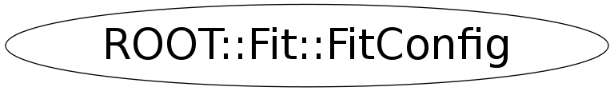

class ROOT::Fit::FitConfig
Class describing the configuration of the fit, options and parameter settings using the ROOT::Fit::ParameterSettings class @ingroup FitMain
Function Members (Methods)
public:
| ~FitConfig() | |
| ROOT::Math::Minimizer* | CreateMinimizer() |
| void | CreateParamsSettings(const ROOT::Math::IParamMultiFunction& func) |
| ROOT::Fit::FitConfig | FitConfig(unsigned int npar = 0) |
| ROOT::Fit::FitConfig | FitConfig(const ROOT::Fit::FitConfig& rhs) |
| const string& | MinimizerAlgoType() const |
| ROOT::Math::MinimizerOptions& | MinimizerOptions() |
| const string& | MinimizerType() const |
| bool | MinosErrors() const |
| const vector<unsigned int>& | MinosParams() const |
| bool | NormalizeErrors() const |
| unsigned int | NPar() const |
| ROOT::Fit::FitConfig& | operator=(const ROOT::Fit::FitConfig& rhs) |
| bool | ParabErrors() const |
| const vector<ROOT::Fit::ParameterSettings>& | ParamsSettings() const |
| vector<ROOT::Fit::ParameterSettings>& | ParamsSettings() |
| const ROOT::Fit::ParameterSettings& | ParSettings(unsigned int i) const |
| ROOT::Fit::ParameterSettings& | ParSettings(unsigned int i) |
| static void | SetDefaultMinimizer(const char* type, const char* algo = 0) |
| void | SetFromFitResult(const ROOT::Fit::FitResult& rhs) |
| void | SetMinimizer(const char* type, const char* algo = 0) |
| void | SetMinosErrors(bool on = true) |
| void | SetMinosErrors(const vector<unsigned int>& paramInd) |
| void | SetNormErrors(bool on = true) |
| void | SetParabErrors(bool on = true) |
| void | SetParamsSettings(const vector<ROOT::Fit::ParameterSettings>& pars) |
| void | SetParamsSettings(unsigned int npar, const double* params, const double* vstep = 0) |
| void | SetUpdateAfterFit(bool on = true) |
| void | SetWeightCorrection(bool on = true) |
| bool | UpdateAfterFit() const |
| bool | UseWeightCorrection() const |
Data Members
private:
| ROOT::Math::MinimizerOptions | fMinimizerOpts | minimizer control parameters including name and algo type |
| bool | fMinosErrors | do full error analysis using Minos |
| vector<unsigned int> | fMinosParams | vector with the parameter indeces for running Minos |
| bool | fNormErrors | flag for error normalization |
| bool | fParabErrors | get correct parabolic errors estimate (call Hesse after minimizing) |
| vector<ROOT::Fit::ParameterSettings> | fSettings | vector with the parameter settings |
| bool | fUpdateAfterFit | update the configuration after a fit using the result |
| bool | fWeightCorr | apply correction to errors for weights fits |
Class Charts
{kind=link}
{kind=link}
{kind=link}
{kind=link}

Function documentation
const ParameterSettings & ParSettings(unsigned int i) const
get the parameter settings for the i-th parameter (const method)
{ return fSettings.at(i); }ParameterSettings & ParSettings(unsigned int i)
get the parameter settings for the i-th parameter (non-const method)
{ return fSettings.at(i); }const std::vector<ROOT::Fit::ParameterSettings> & ParamsSettings() const
get the vector of parameter settings (const method)
{ return fSettings; }std::vector<ROOT::Fit::ParameterSettings> & ParamsSettings()
get the vector of parameter settings (non-const method)
{ return fSettings; }void CreateParamsSettings(const ROOT::Math::IParamMultiFunction& func)
set the parameter settings from a model function.
Create always new parameter setting list from a given model function
void SetParamsSettings(unsigned int npar, const double* params, const double* vstep = 0)
set the parameter settings from number of parameters and a vector of values and optionally step values. If there are not existing or number of parameters does not match existing one, create a new parameter setting list.
void SetParamsSettings(const vector<ROOT::Fit::ParameterSettings>& pars)
Set the parameter settings from a vector of parameter settings
const std::string & MinimizerType() const
return type of minimizer package
{ return fMinimizerOpts.MinimizerType(); }const std::string & MinimizerAlgoType() const
return type of minimizer algorithms
{ return fMinimizerOpts.MinimizerAlgorithm(); }bool NormalizeErrors() const
flag to check if resulting errors are be normalized according to chi2/ndf
{ return fNormErrors; }bool UpdateAfterFit() const
Update configuration after a fit using the FitResult
{ return fUpdateAfterFit; }bool UseWeightCorrection() const
Apply Weight correction for error matrix computation
{ return fWeightCorr; }const std::vector<unsigned int> & MinosParams() const
return vector of parameter indeces for which the Minos Error will be computed
{ return fMinosParams; }void SetNormErrors(bool on = true)
set the option to normalize the error on the result according to chi2/ndf
{ fNormErrors= on; }void SetWeightCorrection(bool on = true)
apply the weight correction for error matric computation
{ fWeightCorr = on; }void SetMinosErrors(const vector<unsigned int>& paramInd)
set parameter indeces for running Minos this can be used for running Minos on a subset of parameters - otherwise is run on all of them if MinosErrors() is set
void SetUpdateAfterFit(bool on = true)
Update configuration after a fit using the FitResult
{ fUpdateAfterFit = on; }void SetDefaultMinimizer(const char* type, const char* algo = 0)
static function to control default minimizer type and algorithm